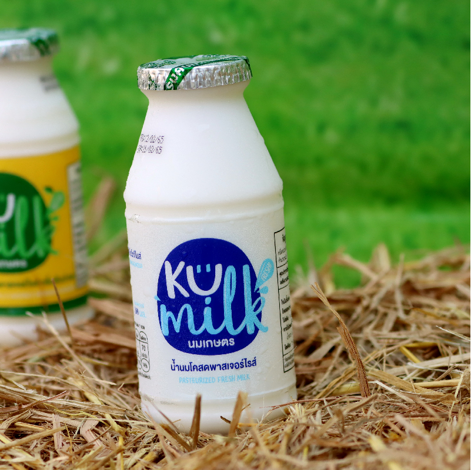
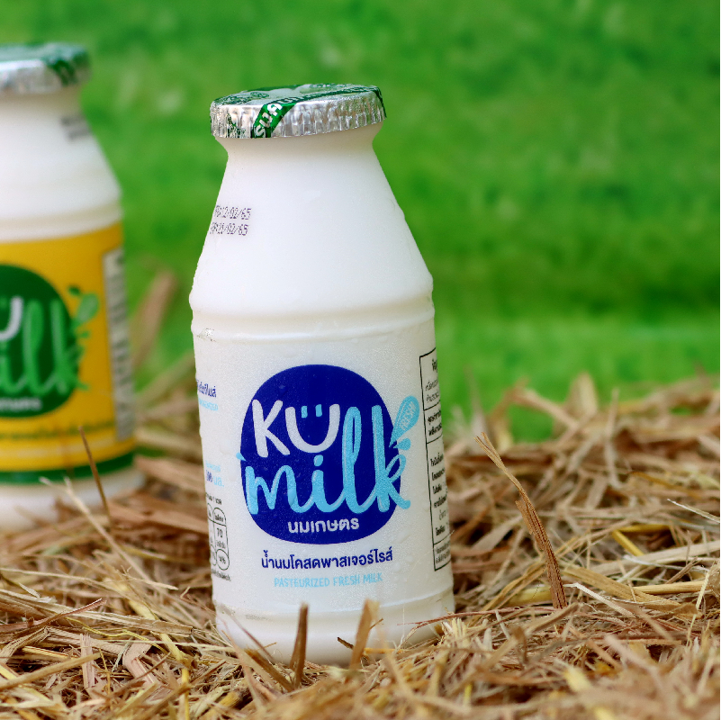

ยินดีตอนรับสู่
THE PREMIUM @ KU
AR Camera Web App
Cleaning Gel
เจลทำความสะอาดผิวหน้าสูตรอ่อนโยน ที่เหมาะกับทุกสภาพผิว ช่วยทำความสะอาดผิวได้หมดจดจริงๆไม่ว่าจะเป็น ฝุ่น มลภาวะ ส่วนใครที่มีปัญหาสิว หรือมีแนวโน้มที่เป็นสิวง่ายก็ยิ่งตอบโจทย์เนื่องจากมีส่วนผสมของน้ำมันหอมระเหยเสม็ดขาว และสารสกัดจากชาเขียวออร์แกนิค
150 บาท
น้ำนมข้าวโพด หวาน 97.8% ไร่สุวรรณ
น้ำนมข้าวโพดแท้ ส่งตรงมาจากไร่สุวรรณ ดื่นง่าย หวานชื่นใจ เครื่องดื่มสุดอร่อย อุดมด้วยคุณค่าทางโภชนาการ ผลิตจำหน่ายสดใหม่วันต่อวัน โดยศูนย์วิจัยข้าวโพดและข้าวฟ่างแห่งชาติ มหาวิทยาลัยเกษตรศาสตร์ จังหวัดนครราชสีมา
25 บาท


Ku Milk นมเกษตร
“นมเกษตร” เป็นได้มากกว่านม"
“นมเกษตร” หรือ KU milk ดำเนินการผลิตโดยมหาวิทยาลัยเกษตรศาสตร์ เป็นผลิตภัณฑ์นมแห่งแรกๆของประเทศไทย ที่ผลิตโดยภาครัฐ ที่คู่ขนานไปกับการเรียนการสอนมาเป็นระยะเวลาอันยาวนานเกินกว่าครึ่งศตวรรษ มาจนถึง ณ วันนี้ เกษตรศาสตร์กำลังจะขับเคลื่อน “ นมเกษตร ให้เป็นได้มากกว่านมและอาหารของคนไทย”
--- บาท
 

Fruit Vinegar Drink น้ำส้มสายชูผสมน้ำผลไม้
เครื่องดื่มหมักจากธรรมชาติ มีคุณสมบัติช่วยลดคอเลสเตอรอล ช่วยลดไตรกลีเซอร์ไรด์และไขมันชนิด low-density lipoprotein (LDL) มีสารต้านอนุมูลอิสระ ช่วยชะลอวัย และป้องกันโรคมะเร็ง ช่วยย่อยอาหาร ไม่แต่งกลิ่น ไม่เจือสีสังเคราะห์ ไม่ใช้วัตถุกันเสีย ดื่มง่าย
--- บาท